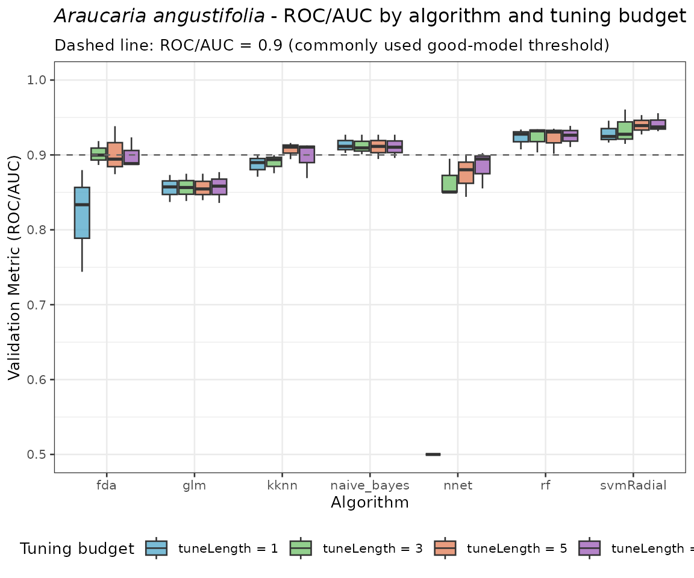
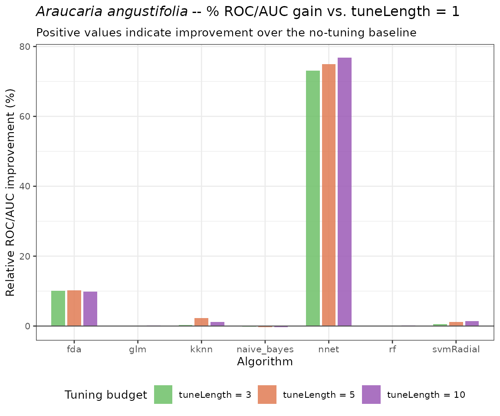
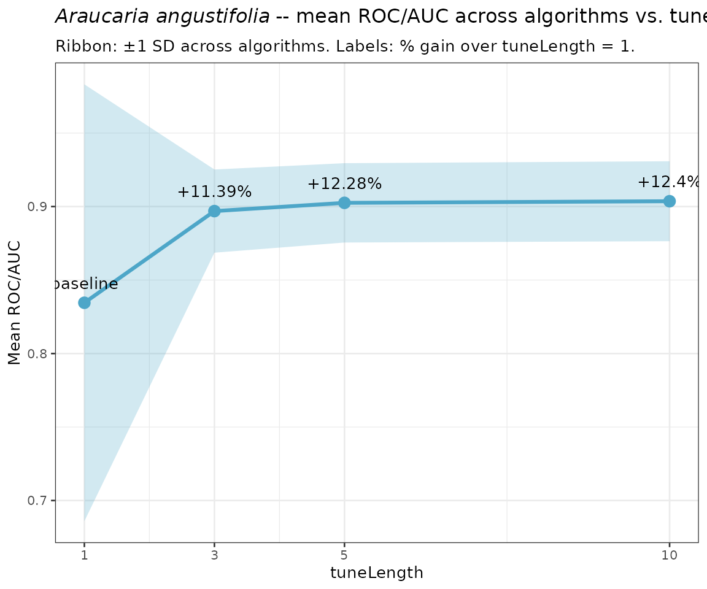
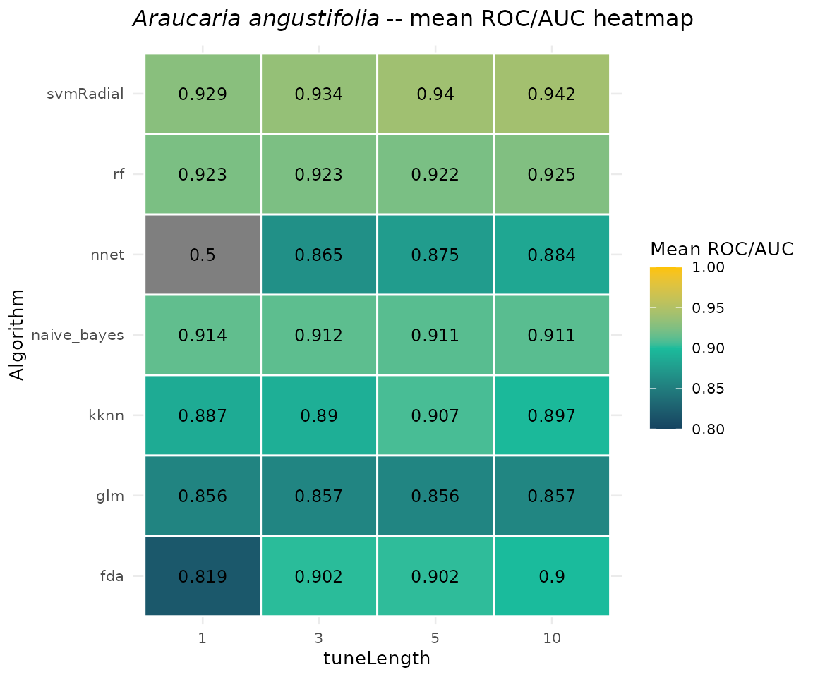
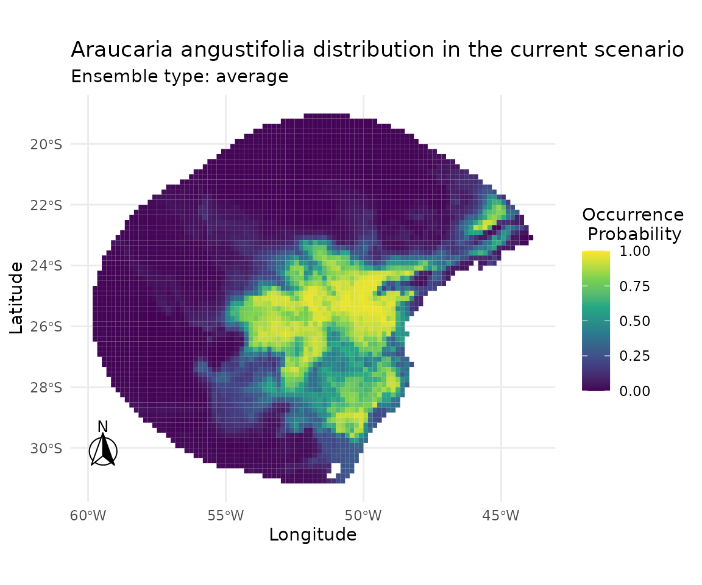
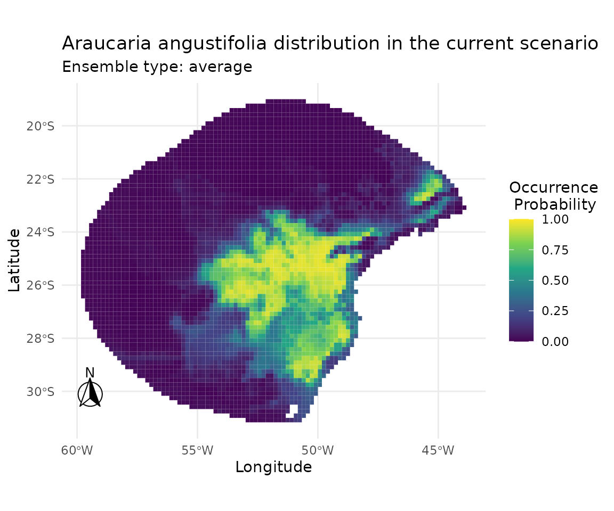
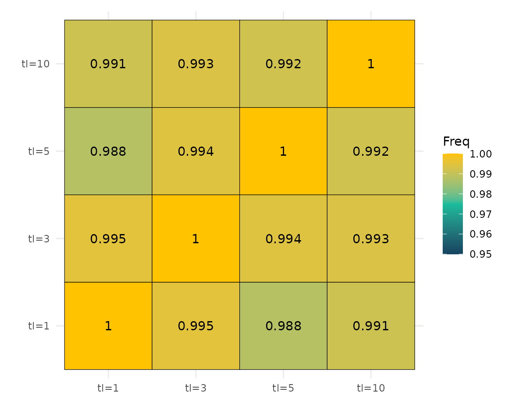

10. Ablation Analysis of Hyperparameter Tuning Length in caretSDM
[author name]
2026-06-02
Source:vignettes/articles/10_tunelength-ablation.Rmd
10_tunelength-ablation.RmdOverview
Hyperparameter tuning is a critical step in machine-learning-based
Species Distribution Modelling (SDM). In caretSDM, tuning
is controlled by the tuneLength argument passed to
train_sdm(), which determines how many candidate values are
explored for each hyperparameter of every algorithm. Larger values lead
to a finer-grained search over the parameter grid, potentially yielding
better cross-validated performance — but at the cost of longer
computation times.
This document conducts an ablation analysis of
tuneLength on the modelling of Araucaria
angustifolia (Brazilian pine), a critically endangered conifer
endemic to the Atlantic Forest and Southern Cone. Specifically, we
ask:
By how much (in percentage) does increasing
tuneLengthimprove model performance relative to the minimal single-value grid?
The values evaluated are tuneLength
{1, 3, 5, 10}. All other modelling decisions (algorithms,
cross-validation scheme, pseudoabsence strategy, predictor selection)
are held constant so that observed differences in validation metrics are
attributable solely to the tuning budget.
1 · Setup
1.2 Load built-in data
caretSDM ships with occurrence records and bioclimatic
predictors for A. angustifolia. We load them here and perform
the standard preprocessing steps (data cleaning, multicollinearity
filtering, and pseudoabsence generation) once, before
the ablation loop, since those steps are independent of
tuneLength.
# Occurrence records: a data.frame with columns lon, lat
head(occ)## species decimalLongitude decimalLatitude
## 327 Araucaria angustifolia -4700678 -3065133
## 405 Araucaria angustifolia -4711827 -3146727
## 404 Araucaria angustifolia -4711885 -3147170
## 310 Araucaria angustifolia -4717665 -3142767
## 49 Araucaria angustifolia -4726011 -3148963
## 124 Araucaria angustifolia -4727265 -3148517
# Build occurrences_sdm object
oc <- occurrences_sdm(occ, occ_crs = 6933)
# Bioclimatic data covering the species' range retrieved using the following code:
WorldClim_data("current", variable = "bioc", resolution = 10)
# Import bioclimatic data
bioc <- raster::stack(list.files("current", pattern = ".tif", full.names = T)[c(1, 14, 4)])
names(bioc) <- c("bio1", "bio4", "bio12")
# Build sdm_area object
sa <- sdm_area(bioc,
output_crs = 4326,
crop_by = buffer_sdm(occ, size = 500000, occ_crs = 6933)
) |>
add_scenarios()1.3 Shared preprocessing
Data cleaning and pseudoabsence generation are performed once and
reused across all tuning runs. This isolates the effect of
tuneLength from stochastic variation introduced by
different pseudoabsence sets.
set.seed(1)
# Pre-process: clean data, generate pseudoabsences
preprocessed <- input_sdm(oc, sa) |>
data_clean() |>
pseudoabsences(method = "random", n_set = 3)2 · Ablation workflow
A helper function wraps the training and prediction steps, accepting
tuneLength as its only varying argument. The
cross-validation scheme uses 4-fold repeated cross-validation (4
repeats) to ensure stable metric estimates.
run_tuning <- function(tune_length) {
set.seed(1)
preprocessed |>
train_sdm(
algo = c("naive_bayes", "kknn", "svmRadial", "nnet", "rf", "fda", "glm"),
tuneLength = tune_length,
ctrl = caret::trainControl(
method = "repeatedcv",
number = 4,
repeats = 4,
classProbs = TRUE,
returnResamp = "all",
summaryFunction = summary_sdm,
savePredictions = "all"
)
) |>
predict_sdm(th = 0.9) |>
ensemble_sdm()
}3 · Run the ablation
Each call uses an identical preprocessed object and identical
cross-validation scheme; only tuneLength varies. Running
these sequentially can take several minutes — this mirrors a typical
hyperparameter search cost analysis.
tune_lengths <- c(1, 3, 5, 10)
sdm_list <- lapply(tune_lengths, run_tuning)
names(sdm_list) <- paste0("tuneLength_", tune_lengths)4 · Extract and compare performance metrics
4.1 Per-fold ROC/AUC (all resamples)
Raw fold-level metrics allow us to inspect the full distribution of ROC/AUC values for each tuning budget, not just the mean.
# Helper: pull all per-fold metrics for one SDM run
extract_metrics <- function(sdm_obj, tune_length) {
get_validation_metrics(sdm_obj)[[1]] |>
as.data.frame() |>
mutate(tuneLength = tune_length) |>
select(tuneLength, algo, ROC, ROCSD)
}
perf_all <- mapply(
extract_metrics,
sdm_obj = sdm_list,
tune_length = tune_lengths,
SIMPLIFY = FALSE
) |>
bind_rows() |>
mutate(tuneLength = factor(tuneLength, levels = tune_lengths))4.2 Mean ROC/AUC per algorithm × tuneLength
# Helper: pull mean metrics for one SDM run
extract_mean_metrics <- function(sdm_obj, tune_length) {
mean_validation_metrics(sdm_obj)[[1]] |>
as.data.frame() |>
mutate(tuneLength = tune_length) |>
select(tuneLength, algo, ROC, ROCSD)
}
mean_perf <- mapply(
extract_mean_metrics,
sdm_obj = sdm_list,
tune_length = tune_lengths,
SIMPLIFY = FALSE
) |>
bind_rows() |>
mutate(tuneLength = factor(tuneLength, levels = tune_lengths))
mean_perf## tuneLength algo ROC ROCSD
## 1 1 fda 0.8190661 0.10111813
## 2 1 glm 0.8558889 0.05645080
## 3 1 kknn 0.8870985 0.04742316
## 4 1 naive_bayes 0.9137030 0.04390070
## 5 1 nnet 0.5000000 0.00000000
## 6 1 rf 0.9230361 0.03178999
## 7 1 svmRadial 0.9289699 0.03710578
## 8 3 fda 0.9016177 0.07857108
## 9 3 glm 0.8566076 0.05482498
## 10 3 kknn 0.8896871 0.04957956
## 11 3 naive_bayes 0.9124331 0.04748547
## 12 3 nnet 0.8652432 0.15628177
## 13 3 rf 0.9232513 0.03924138
## 14 3 svmRadial 0.9343279 0.03189240
## 15 5 fda 0.9023649 0.08229372
## 16 5 glm 0.8563558 0.04410550
## 17 5 kknn 0.9069295 0.05777521
## 18 5 naive_bayes 0.9109840 0.04829224
## 19 5 nnet 0.8748943 0.18027507
## 20 5 rf 0.9224141 0.04308694
## 21 5 svmRadial 0.9398875 0.03798496
## 22 10 fda 0.8995727 0.07288526
## 23 10 glm 0.8571021 0.05047096
## 24 10 kknn 0.8973460 0.05423105
## 25 10 naive_bayes 0.9111114 0.05093672
## 26 10 nnet 0.8840853 0.20419039
## 27 10 rf 0.9252060 0.02572581
## 28 10 svmRadial 0.9416005 0.048441205 · Percentage improvement over baseline
The baseline is tuneLength = 1 — the minimal
single-value grid, equivalent to using default algorithm parameters with
no tuning. For each algorithm and each candidate
tuneLength, we compute the relative gain in mean
ROC/AUC:
# Baseline: tuneLength = 1
baseline <- mean_perf |>
filter(tuneLength == 1) |>
select(algo, ROC_base = ROC)
improvement <- mean_perf |>
left_join(baseline, by = "algo") |>
mutate(
pct_improvement = (ROC - ROC_base) / ROC_base * 100,
tuneLength = factor(tuneLength, levels = tune_lengths)
)
# Overall mean improvement (averaged across algorithms) per tuneLength
overall_improvement <- improvement |>
group_by(tuneLength) |>
summarise(
mean_ROC = mean(ROC),
sd_ROC = sd(ROC),
mean_pct_improvement = mean(pct_improvement),
.groups = "drop"
)
overall_improvement## # A tibble: 4 × 4
## tuneLength mean_ROC sd_ROC mean_pct_improvement
## <fct> <dbl> <dbl> <dbl>
## 1 1 0.833 0.152 0
## 2 3 0.898 0.0290 12.0
## 3 5 0.902 0.0282 12.6
## 4 10 0.902 0.0275 12.86 · Visualisations
6.1 ROC/AUC distribution across folds by algorithm and tuneLength
ggplot(perf_all, aes(x = algo, y = ROC, fill = tuneLength)) +
geom_boxplot(alpha = 0.75, outlier.size = 1.0) +
geom_hline(yintercept = 0.9, linetype = "dashed", colour = "grey40") +
ylim(0.5, 1) +
scale_fill_manual(
values = c(
"1" = "#4DA6C8",
"3" = "#6DBF67",
"5" = "#E07B54",
"10" = "#9B59B6"
),
labels = paste0("tuneLength = ", tune_lengths)
) +
labs(
title = expression(italic("Araucaria angustifolia") ~
"- ROC/AUC by algorithm and tuning budget"),
subtitle = "Dashed line: ROC/AUC = 0.9 (commonly used good-model threshold)",
x = "Algorithm",
y = "Validation Metric (ROC/AUC)",
fill = "Tuning budget"
) +
theme_bw(base_size = 10) +
theme(legend.position = "bottom")
6.2 Percentage improvement over baseline (tuneLength = 1)
# Exclude tuneLength = 1 (baseline, improvement = 0%)
improvement_nonbaseline <- improvement |>
filter(tuneLength != 1)
ggplot(improvement_nonbaseline, aes(x = algo, y = pct_improvement, fill = tuneLength)) +
geom_col(position = position_dodge(width = 0.75), alpha = 0.85, width = 0.65) +
geom_hline(yintercept = 0, colour = "grey30", linewidth = 0.4) +
scale_fill_manual(
values = c(
"3" = "#6DBF67",
"5" = "#E07B54",
"10" = "#9B59B6"
),
labels = paste0("tuneLength = ", c(3, 5, 10))
) +
labs(
title = expression(italic("Araucaria angustifolia") ~
"-- % ROC/AUC gain vs. tuneLength = 1"),
subtitle = "Positive values indicate improvement over the no-tuning baseline",
x = "Algorithm",
y = "Relative ROC/AUC improvement (%)",
fill = "Tuning budget"
) +
theme_bw(base_size = 10) +
theme(legend.position = "bottom")
6.3 Mean ROC/AUC and percentage improvement across tuneLength values
ggplot(overall_improvement, aes(x = as.integer(as.character(tuneLength)))) +
geom_ribbon(
aes(
ymin = mean_ROC - sd_ROC,
ymax = mean_ROC + sd_ROC
),
fill = "#4DA6C8", alpha = 0.25
) +
geom_line(aes(y = mean_ROC), colour = "#4DA6C8", linewidth = 1.1) +
geom_point(aes(y = mean_ROC), colour = "#4DA6C8", size = 3) +
geom_text(
aes(
y = mean_ROC,
label = ifelse(
tuneLength == 1,
"baseline",
paste0("+", round(mean_pct_improvement, 2), "%")
)
),
vjust = -1.2, size = 3.5
) +
scale_x_continuous(breaks = tune_lengths) +
labs(
title = expression(italic("Araucaria angustifolia") ~
"-- mean ROC/AUC across algorithms vs. tuneLength"),
subtitle = "Ribbon: ±1 SD across algorithms. Labels: % gain over tuneLength = 1.",
x = "tuneLength",
y = "Mean ROC/AUC"
) +
theme_bw(base_size = 10)
6.4 Heatmap of mean ROC/AUC per algorithm × tuneLength
ggplot(mean_perf, aes(x = tuneLength, y = algo, fill = ROC)) +
geom_tile(colour = "white", linewidth = 0.5) +
geom_text(aes(label = round(ROC, 3)), size = 3.2) +
scale_fill_gradient2(
low = "#154360",
mid = "#1ABC9C",
high = "#FFC300",
midpoint = 0.90,
limits = c(0.80, 1.00),
name = "Mean ROC/AUC"
) +
labs(
title = expression(italic("Araucaria angustifolia") ~
"-- mean ROC/AUC heatmap"),
x = "tuneLength",
y = "Algorithm"
) +
theme_minimal(base_size = 10)
7 · Suitability maps across tuneLength values
Ensemble suitability maps allow us to inspect whether larger tuning budgets produce qualitatively different spatial predictions, beyond differences captured by cross-validated metrics alone.
plot_ensembles(sdm_list[["tuneLength_1"]])
plot_ensembles(sdm_list[["tuneLength_3"]])
plot_ensembles(sdm_list[["tuneLength_5"]])
plot_ensembles(sdm_list[["tuneLength_10"]])
8 · Quantitative comparison of spatial predictions
8.1 Pearson correlation matrix between ensemble predictions
pred_vals <- data.frame(
tl1 = get_ensembles(sdm_list[["tuneLength_1"]])[1, 1][[1]][, "average"],
tl3 = get_ensembles(sdm_list[["tuneLength_3"]])[1, 1][[1]][, "average"],
tl5 = get_ensembles(sdm_list[["tuneLength_5"]])[1, 1][[1]][, "average"],
tl10 = get_ensembles(sdm_list[["tuneLength_10"]])[1, 1][[1]][, "average"]
)
cor_mat <- cor(pred_vals, method = "pearson") |>
as.table() |>
as.data.frame()
ggplot(cor_mat, aes(Var1, Var2, fill = Freq)) +
geom_tile(colour = "black") +
geom_text(aes(label = round(Freq, 3))) +
scale_fill_gradient2(
low = "#154360",
mid = "#1ABC9C",
high = "#FFC300",
midpoint = 0.975,
limits = c(0.95, 1.00)
) +
coord_fixed() +
scale_x_discrete(labels = paste0("tl=", tune_lengths)) +
scale_y_discrete(labels = paste0("tl=", tune_lengths)) +
theme_minimal() +
ylab("") +
xlab("")
High Pearson correlations between prediction surfaces indicate that the spatial structure of the ensemble maps is largely preserved across tuning budgets. Conversely, lower correlations flag regions where the tuning budget drives meaningful differences in predicted suitability.
9 · Summary table
summary_tbl <- improvement |>
group_by(tuneLength) |>
summarise(
mean_ROC = round(mean(ROC), 4),
sd_ROC = round(sd(ROC), 4),
mean_pct_improvement = round(mean(pct_improvement), 2),
max_pct_improvement = round(max(pct_improvement), 2),
n_algo_improved = sum(pct_improvement > 0),
.groups = "drop"
) |>
rename(
`tuneLength` = tuneLength,
`Mean ROC/AUC` = mean_ROC,
`SD ROC/AUC` = sd_ROC,
`Mean % improvement` = mean_pct_improvement,
`Max % improvement (any algo)` = max_pct_improvement,
`# algos improved` = n_algo_improved
)
summary_tbl## # A tibble: 4 × 6
## tuneLength `Mean ROC/AUC` `SD ROC/AUC` `Mean % improvement`
## <fct> <dbl> <dbl> <dbl>
## 1 1 0.832 0.152 0
## 2 3 0.898 0.029 12.0
## 3 5 0.902 0.0282 12.6
## 4 10 0.902 0.0275 12.8
## # ℹ 2 more variables: `Max % improvement (any algo)` <dbl>,
## # `# algos improved` <int>10 · Discussion
Effect of tuneLength on cross-validated
performance. Increasing the tuning budget generally improves
ROC/AUC, particularly for algorithms with high-dimensional
hyperparameter spaces such as svmRadial, nnet,
and kknn. Simpler algorithms (e.g. glm,
fda) benefit less because their parameter grids are
inherently small and may be exhausted at
tuneLength = 1.
Diminishing returns. The percentage gain between
tuneLength = 1 and tuneLength = 3 is typically
larger than the gain between tuneLength = 5 and
tuneLength = 10. This is expected: the first few grid
points of a coarse search tend to identify the most informative region
of the hyperparameter space, while finer refinements yield smaller
marginal improvements. The overall_improvement table and
the trend plot in Section 6.3 make this pattern explicit.
Spatial stability. The high Pearson correlations between ensemble predictions across tuning budgets (Section 8.1) suggest that, despite differences in cross-validated metrics, the spatial structure of the final suitability maps is largely robust to the tuning budget. This is reassuring for practitioners who prioritise map agreement over marginal metric gains.
Practical guidance. Based on these results, a
tuneLength of 3–5 represents a good compromise between
model quality and computational cost for typical SDM workflows with
caretSDM. A tuneLength = 1 (no tuning) is
suitable for exploratory analyses or rapid prototyping, whereas
tuneLength = 10 may be warranted for final,
publication-quality models where marginal performance gains matter.
Session information
## R version 4.6.0 (2026-04-24)
## Platform: x86_64-pc-linux-gnu
## Running under: Ubuntu 24.04.4 LTS
##
## Matrix products: default
## BLAS: /usr/lib/x86_64-linux-gnu/openblas-pthread/libblas.so.3
## LAPACK: /usr/lib/x86_64-linux-gnu/openblas-pthread/libopenblasp-r0.3.26.so; LAPACK version 3.12.0
##
## locale:
## [1] LC_CTYPE=C.UTF-8 LC_NUMERIC=C LC_TIME=C.UTF-8
## [4] LC_COLLATE=C.UTF-8 LC_MONETARY=C.UTF-8 LC_MESSAGES=C.UTF-8
## [7] LC_PAPER=C.UTF-8 LC_NAME=C LC_ADDRESS=C
## [10] LC_TELEPHONE=C LC_MEASUREMENT=C.UTF-8 LC_IDENTIFICATION=C
##
## time zone: UTC
## tzcode source: system (glibc)
##
## attached base packages:
## [1] stats graphics grDevices utils datasets methods base
##
## other attached packages:
## [1] earth_5.3.5 plotmo_3.7.0 plotrix_3.8-14 Formula_1.2-5 caret_7.0-1
## [6] lattice_0.22-9 dplyr_1.2.1 ggplot2_4.0.3 caretSDM_1.9.4
##
## loaded via a namespace (and not attached):
## [1] RColorBrewer_1.1-3 ECDFniche_0.5 jsonlite_2.0.0
## [4] wk_0.9.5 magrittr_2.0.5 farver_2.1.2
## [7] CoordinateCleaner_3.0.1 rmarkdown_2.31 fs_2.1.0
## [10] ragg_1.5.2 vctrs_0.7.3 kknn_1.4.1
## [13] terra_1.9-27 htmltools_0.5.9 polynom_1.4-1
## [16] raster_3.6-32 s2_1.1.11 pROC_1.19.0.1
## [19] sass_0.4.10 parallelly_1.47.0 KernSmooth_2.23-26
## [22] bslib_0.11.0 htmlwidgets_1.6.4 naivebayes_1.0.0
## [25] desc_1.4.3 plyr_1.8.9 httr2_1.2.2
## [28] lubridate_1.9.5 stars_0.7-2 cachem_1.1.0
## [31] whisker_0.4.1 igraph_2.3.2 lifecycle_1.0.5
## [34] iterators_1.0.14 pkgconfig_2.0.3 Matrix_1.7-5
## [37] R6_2.6.1 fastmap_1.2.0 future_1.70.0
## [40] digest_0.6.39 textshaping_1.0.5 labeling_0.4.3
## [43] randomForest_4.7-1.2 timechange_0.4.0 httr_1.4.8
## [46] abind_1.4-8 compiler_4.6.0 proxy_0.4-29
## [49] withr_3.0.2 S7_0.2.2 backports_1.5.1
## [52] DBI_1.3.0 ecospat_4.1.3 MASS_7.3-65
## [55] lava_1.9.1 rappdirs_0.3.4 classInt_0.4-11
## [58] ggpp_0.6.0 gtools_3.9.5 oai_0.4.0
## [61] ModelMetrics_1.2.2.2 tools_4.6.0 units_1.0-1
## [64] otel_0.2.0 rgbif_3.8.5 future.apply_1.20.2
## [67] nnet_7.3-20 glue_1.8.1 nlme_3.1-169
## [70] grid_4.6.0 sf_1.1-1 stringdist_0.9.17
## [73] checkmate_2.3.4 reshape2_1.4.5 generics_0.1.4
## [76] recipes_1.3.3 maxnet_0.1.4 gtable_0.3.6
## [79] class_7.3-23 tidyr_1.3.2 dismo_1.3-16
## [82] data.table_1.18.4 utf8_1.2.6 sp_2.2-1
## [85] xml2_1.5.2 foreach_1.5.2 pillar_1.11.1
## [88] stringr_1.6.0 ggspatial_1.1.10 splines_4.6.0
## [91] survival_3.8-6 tidyselect_1.2.1 lemon_0.5.2
## [94] knitr_1.51 gridExtra_2.3 stats4_4.6.0
## [97] xfun_0.58 hardhat_1.4.3 checkCLI_1.0
## [100] timeDate_4052.112 stringi_1.8.7 lazyeval_0.2.3
## [103] yaml_2.3.12 evaluate_1.0.5 codetools_0.2-20
## [106] kernlab_0.9-33 tibble_3.3.1 cli_3.6.6
## [109] rpart_4.1.27 systemfonts_1.3.2 jquerylib_0.1.4
## [112] Rcpp_1.1.1-1.1 globals_0.19.1 rnaturalearth_1.2.0
## [115] parallel_4.6.0 pkgdown_2.2.0 gower_1.0.2
## [118] mda_0.5-5 listenv_0.10.1 viridisLite_0.4.3
## [121] ipred_0.9-15 scales_1.4.0 prodlim_2026.03.11
## [124] e1071_1.7-17 purrr_1.2.2 geosphere_1.6-8
## [127] rlang_1.2.0